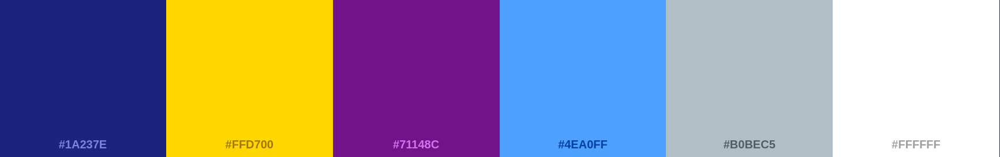

Who assits to seminars?
Site Name
Whoassitstoseminars.net
Site Purpose
The website is designed to support seminar teachers by providing engaging and interactive activities for their students. Its main feature is a quiz game inspired by Who Wants to Be a Millionaire?, offering a fun and dynamic way to assess students’ knowledge. Teachers can create custom questions, set difficulty levels, and define correct answers, ensuring the game aligns with their lesson plans.
Scenarios
- How can I make my seminar lessons more interactive and engaging for students?/li>
- Where can I find ready-made quiz games or create custom ones to test my students’ knowledge in a fun way?
- How can I customize quiz questions to match the topics I’m teaching in my seminar classes?
Color Schema
The primary color will be blue to represent nature of learning, with yellow as a secondary color to highlight certain elements.
Neutral tones like greeen and white will be used for text to ensure readability.
Typography
Lobster typography will be used for titles and subtitles to create a playful feel.
For headings, subheadings, and special titles. It gives a playful and engaging feel, perfect for capturing attention and setting a fun tone.
Roboto typography will be used for paragraphs and other text to keep it clean and easy to read.
For the body text, paragraphs, and general content. It is clean, modern, and highly readable, making it suitable for providing detailed information.